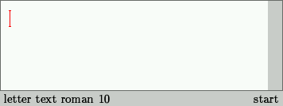
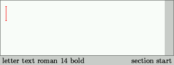
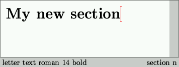
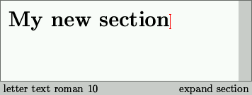
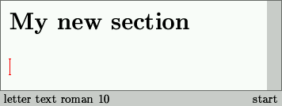
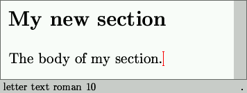
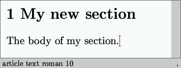

icon menu or the Document->style submenu.
Notice the change in the left footer after the selection of a document style.
icon menu or the Document->style submenu.
Notice the change in the left footer after the selection of a document style.
Chapter 5
Typing a simple structured text
A main advantage of using TeXmacs as a text editor is that it helps and encourages you to write so called structured documents. Let us briefly explain what we mean by this. If you look at a printed book, then you will notice that it has been subdivided into chapters, a table of contents, an index and so on. The start of a chapter is usually indicated by a page break and a title in a clearly distinguishable font. Moreover, the title of the chapter is often used as a header for all pages in that chapter. Inside a chapter, there may be other special pieces of text, like citations, definitions, theorems, etc. which are typesetted in a different way from the main text.
Two approaches can be distinguished in order to write a book or a shorter document with the above features. The first, so called visual approach consists of taking care of all typesetting issues yourself. This means that you will have to choose the appropriate character font each time that you start a new chapter or theorem and that you have to number these chapters and theorems yourself. The second structured document approach requires you to tell the computer when you want to start a new chapter or theorem. The document style is responsible for choosing a nice way to typeset chapter titles, theorems, etc.
The advantage of the visual approach is that it may seem a bit simpler and natural for a newcomer, because it involves only little operations (such as changing the font size, selecting a bold or italic font, etc.). Moreover, most commercial text editors encourage you to use it. However, the visual approach has many disadvantages with respect to the structured document approach:
After having giving a name to your document, the next thing you usually should do is select a document style. Although you might skip this step in principle, we strongly recommend you not to do so. The document style is responsable for the general layout of your document, which can either be a letter, an article a book, or something else (an experienced TeXmacs user may even define his own document styles).
There are multiple advantages to document styles. First of all, they allow you to structure your document into chapters, sections, subsections, etc. Secondly, TeXmacs is responsable for typesetting such structured documents in a beautiful and coherent way, which fullfills the highest typesseting standards required by professinal publishing companies.
Document styles are selected from the
icon menu or the Document->style submenu.
Notice the change in the left footer after the selection of a document style.
 icon menu or the Insert->section menu.
When starting with an empty document,
you should observe the following change on your screen:
icon menu or the Insert->section menu.
When starting with an empty document,
you should observe the following change on your screen:
|  |  |
Notice the change of the size of the cursor. The left footer shows that the section title will appear in 14 points bold face font. The right footer indicates that you are at the start of typing the title of a section. When you finished to type your section title, you have to move the cursor to the right in order to indicate that you are finished (and return to the normal text):
|  |  |
Observe that the left footer indicates that you are again using the usual 10 points computer modern roman font. The right footer indicates that your cursor is after the section title (after the expansion of the section macro). In order to continue typing, you should first go to the next line by pushing the return or enter key. Next you may type the body of your section.
|  |  |
At this point it is interesting to change a posteriori your document style, in order to get a small taste of the power of structured documents. After selection of the article document style, the sections will be numbered:

In order to manually change the character font, you have to look in the menu Text->font. The current font is determined by several characteristics: its name, family, series, shape and size. Any combination of these characteristics lead to a different font; this will be described in more detail later. In our sample text, we want to type a french word in italic, so we select the italic font shape:
In order to type the french accented `é' character in the word beauté, you should use the keybinding esc ' e. This is a general way to obtain accented characters. For instance, the german character `ü' is obtained by typing esc " u. Many other keybindings exist in TeXmacs, which will be discussed later. Below we have indicated what happens after you successively press esc, ' and e. Notice the information displayed on the footer.
When you have finished to type the italic text and you want to get back to the original font, then you should position the cursor after the italic text. This can either be done by pressing on the right arrow key ->, or by clicking on the left mouse button well behind the word beauté. Both the left footer and the slope of the cursor indicate that you are typing using an upright font.
Do not forget to regularly save the changes in your document by pressing F3 or using File->save. TeXmacs also automatically saves your document every two minutes. You may recognize the autosaving from the message below on the footer:
When you attempt to load a file in which you made some unsaved changes then you may be prompted with the question whether you wish to load a more recent autosave file.
Copyright (C) 1999, 2000 by Joris van der Hoeven.
This webpage is part of GNU TeXmacs and the larger GNU project. Verbatim copying and distribution of it is permitted in any medium, provided this notice is preserved. For more information or questions, please contact Joris van der Hoeven.
Free Software Foundation, Inc., 59 Temple Place - Suite 330, Boston, MA 02111, USA